Esta lugar les presentaremos una linea de tiempo con todas las verciones y los que
agregaron
Classic (Pre-Alpha)
Esta fue la primera versión de Minecraft, lanzada en mayo de 2009. Era una versión muy básica
del juego, con un mundo generado de forma aleatoria y limitadas opciones de construcción.
Minecraft Alpha y Beta
Durante las fases beta y alfa de Minecraft, se realizaron varias actualizaciones que transformaron el juego.
Estas mejoras incluyeron la introducción de eventos especiales para vacaciones, nuevos elementos como tintes
y dispensadores , características como
repetidores y camas
, características como
repetidores y camas  , la inclusión de lobos y mecánicas como dormir en camas para cambiar
el punto de spawn del jugador, estadísticas y logros, la llegada de mapas y puertas trampa, pistones
, la inclusión de lobos y mecánicas como dormir en camas para cambiar
el punto de spawn del jugador, estadísticas y logros, la llegada de mapas y puertas trampa, pistones  y herramientas de tijeras
y herramientas de tijeras , así como nuevos bloques, ítems y mobs
como Enderman. Estas actualizaciones
fueron esenciales para mejorar la jugabilidad y ofrecer una experiencia más completa a los jugadores de
Minecraft.
, así como nuevos bloques, ítems y mobs
como Enderman. Estas actualizaciones
fueron esenciales para mejorar la jugabilidad y ofrecer una experiencia más completa a los jugadores de
Minecraft.
Minecraft 1.0 (Release)
La versión 1.0.0 de Minecraft, también conocida como la Actualización de Aventura (Parte 2),
fue lanzada el 18 de noviembre de 2011, marcando la liberación oficial del juego después de dos años y medio
de desarrollo. Incluyó características como elaboración de pociones  ,encantamientos
,encantamientos  , el End
, el End  , modo hardcore
, modo hardcore  , reproducción de animales y más. Esta versión fue la última desarrollada por Notch antes de
ceder el cargo de desarrollo creativo a Jens Bergensten. Introdujo nuevos bloques como la Estantería
, reproducción de animales y más. Esta versión fue la última desarrollada por Notch antes de
ceder el cargo de desarrollo creativo a Jens Bergensten. Introdujo nuevos bloques como la Estantería  ,la Piedra del End
,la Piedra del End  , nuevos objetos como Polvo de Blaze
, nuevos objetos como Polvo de Blaze
 y Melón Brillante 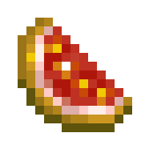, y nuevos mobs como el
Mooshroom Rojo y el Magma Cube
y Melón Brillante 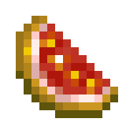, y nuevos mobs como el
Mooshroom Rojo y el Magma Cube  . Además, hubo cambios en la
generación de biomas, en el sistema de armaduras y en la mecánica de muerte del jugador. Fue una
actualización significativa que preparó el terreno para futuras expansiones del juego.
. Además, hubo cambios en la
generación de biomas, en el sistema de armaduras y en la mecánica de muerte del jugador. Fue una
actualización significativa que preparó el terreno para futuras expansiones del juego.
Minecraft 1.1
La versión 1.1 de Minecraft, lanzada el 12 de enero de 2012, fue una actualización importante que introdujo
elementos como huevos de aparición ,
soporte para múltiples idiomas, el tipo de mundo Superflat y playas. Fue la primera actualización en usar
snapshots, agregar 56 idiomas y no introducir nuevos bloques. Además, fue la primera versión lanzada bajo la
dirección creativa de Jens Bergensten. La actualización también incluyó cambios en la generación de biomas,
la adición de nuevos tipos de mundo y mejoras en la mecánica de juego y generación de terreno. Se realizaron
correcciones de errores y se añadieron nuevas opciones de configuración para servidores.
Minecraft 1.2
La versión 1.2 de Minecraft, lanzada el 1 de marzo de 2012, fue una actualización importante que aumentó el
límite de altura a 256 bloques, agregó ataques de zombis en aldeas, biomas de jungla, puentes de madera en
minas abandonadas y pozos en desiertos. También incluyó nuevos bloques e ítems como botellas de experiencia
 , lámparas de
redstone
, lámparas de
redstone  , cargas de fuego
, cargas de fuego  y ladrillos de piedra cincelada
y ladrillos de piedra cincelada
 , así como dos nuevos
mobs: golems de hierro y ocelotes
, así como dos nuevos
mobs: golems de hierro y ocelotes  . Hubo cambios en la generación de
terreno, mecánicas de juego y ajustes en bloques y mobs existentes. Además, se realizaron correcciones de
errores y se implementaron nuevas opciones en la configuración del servidor.
. Hubo cambios en la generación de
terreno, mecánicas de juego y ajustes en bloques y mobs existentes. Además, se realizaron correcciones de
errores y se implementaron nuevas opciones en la configuración del servidor.
Minecraft 1.3
La actualización 1.3 de Minecraft para Java Edition, lanzada el 1 de agosto de 2012, trajo
consigo importantes adiciones y mejoras al juego. Entre las novedades más destacadas se encuentran la
introducción del comercio con aldeanos , el modo aventura, nuevas estructuras generadas como pirámides en la
jungla y el desierto , así como nuevos bloques e ítems
como esmeraldas  , cofres ender
, cofres ender  , libros
, libros  y plumas , entre otros.
y plumas , entre otros.
Además de estas adiciones, se realizaron cambios significativos en la mecánica de juego, como
la división del inventario creativo en secciones separadas, mejoras en la experiencia y el encantamiento
 , y la posibilidad de
realizar transacciones comerciales con aldeanos utilizando esmeraldas como moneda.
, y la posibilidad de
realizar transacciones comerciales con aldeanos utilizando esmeraldas como moneda.
La actualización también trajo consigo correcciones de errores y mejoras en la interfaz y el
rendimiento del juego, lo que contribuyó a una experiencia de juego más fluida y completa para los jugadores
de Minecraft Java Edition.
Minecraft 1.4 Pretty Scary
La actualización "Pretty Scary" de Minecraft Java Edition 1.4, lanzada el 25 de octubre de
2012, trajo una serie de cambios significativos al juego. Entre estos cambios se incluyen la introducción de
nuevos mobs como brujas  , murciélagos
, murciélagos
 , aldeanos zombis 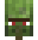 y esqueletos Wither
, aldeanos zombis 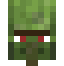 y esqueletos Wither  . También se añadieron cabezas
portátiles, un nuevo jefe llamado el Wither
. También se añadieron cabezas
portátiles, un nuevo jefe llamado el Wither  , el bloque de comandos
, el bloque de comandos  , el yunque , la estrella del Nether
, el yunque , la estrella del Nether  y nuevos alimentos como papas
y nuevos alimentos como papas  , zanahorias
, zanahorias  y pasteles de calabaza
y pasteles de calabaza  . Además, se agregaron elementos de
decoración como marcos de objetos
. Además, se agregaron elementos de
decoración como marcos de objetos  y macetas
y macetas  .
.
El desarrollo de la actualización comenzó después del lanzamiento de la versión 1.3.1 en
agosto de 2012, y se lanzaron 15 snapshots para la versión 1.4 antes del lanzamiento oficial el 25 de
octubre de 2012. Hubo contratiempos debido a errores encontrados, lo que llevó a retrasar el lanzamiento por
un día. La versión 1.4.2 marcó la introducción oficial de la 1.4, con nuevas características como comandos,
mobs, bloques y elementos de juego.
Minecraft 1.5 Redstone
La actualización Redstone (Java Edition 1.5) lanzada el 13 de marzo de 2013, introdujo nuevos bloques
relacionados con el redstone, como el comparador , tolva 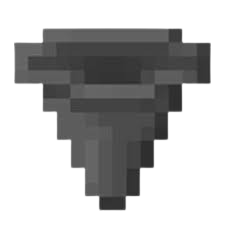 y sensor de luz solar , junto con el bloque decorativo de cuarzo  . También agregó un
sistema de marcadores, nuevos comandos y mejoras en la gestión de inventario. Hubo revisiones posteriores,
como la versión 1.5.1 que permitió combinar libros encantados
. También agregó un
sistema de marcadores, nuevos comandos y mejoras en la gestión de inventario. Hubo revisiones posteriores,
como la versión 1.5.1 que permitió combinar libros encantados  y la 1.5.2 que solucionó problemas de rendimiento.
y la 1.5.2 que solucionó problemas de rendimiento.
Minecraft 1.6 Horse Update
La actualización de caballos para Java Edition 1.6.1, lanzada el 1 de julio de 2013, introdujo nuevas
características como caballos , correas
, bloques de carbón  , alfombras y un nuevo lanzador. Durante el
desarrollo, se lanzaron 18 instantáneas, con un enfoque en correcciones de errores. La prepublicación 1.6 se
lanzó el 25 de junio de 2013, seguida de la prepublicación 1.6.1 el 28 de junio, antes del lanzamiento
final. Las adiciones notables incluyeron packs de recursos, atributos de objetos y entidades, nuevos efectos
de estado, comandos adicionales y ajustes en la mecánica de montar en mobs. Las revisiones posteriores
incluyeron zombies bebé
, alfombras y un nuevo lanzador. Durante el
desarrollo, se lanzaron 18 instantáneas, con un enfoque en correcciones de errores. La prepublicación 1.6 se
lanzó el 25 de junio de 2013, seguida de la prepublicación 1.6.1 el 28 de junio, antes del lanzamiento
final. Las adiciones notables incluyeron packs de recursos, atributos de objetos y entidades, nuevos efectos
de estado, comandos adicionales y ajustes en la mecánica de montar en mobs. Las revisiones posteriores
incluyeron zombies bebé  y correcciones
de errores.
y correcciones
de errores.
Minecraft 1.7 The Update that Changed the World
La actualización que cambió el mundo, Java Edition 1.7.2, lanzada el 25 de octubre de 2013, introdujo un
nuevo generador de terreno, biomas, vidrios tintados  , peces 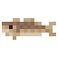, un sistema de pesca
, peces 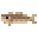, un sistema de pesca  , flores
, flores  , y más. También incluyó mejoras en biomas existentes, ajustes en la
generación de cuevas, nuevas opciones de personalización y desafíos.
, y más. También incluyó mejoras en biomas existentes, ajustes en la
generación de cuevas, nuevas opciones de personalización y desafíos.
Minecraft 1.8 Bountiful Update
La Actualización Bountiful, Java Edition 1.8 lanzada el 2 de septiembre de 2014, introdujo numerosas
características para creadores de mapas y supervivencia. En el ámbito de mapmaking, se añadieron nuevos
gamerules, estadísticas, comandos y etiquetas NBT, así como la capacidad de personalizar modelos de bloques.
Para supervivencia, se agregaron nuevos bloques, mobs como guardianes y conejos , stands de armaduras , un nuevo modo espectador, y mejoras en el sistema de encantamientos
y reparaciones, entre otros cambios. Además, se realizaron mejoras de rendimiento y ajustes en la interfaz
gráfica.
Minecraft 1.9 Combat Update
La Actualización de Combate, Java Edition 1.9, fue lanzada el 29 de febrero de 2016. Introdujo un nuevo
sistema de combate y varias adiciones notables, como reiniciar la pelea contra el dragón del End  , islas generadas infinitamente en
el End, mano secundaria para el uso de dos objetos, escudos 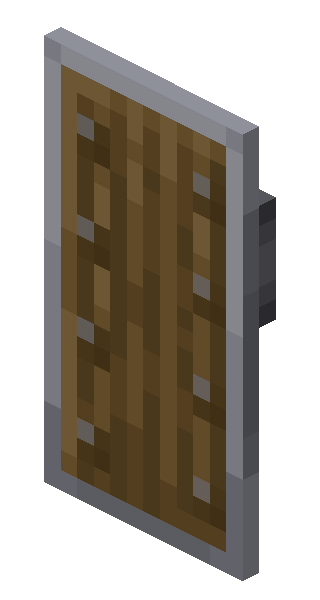, nuevas flechas
, islas generadas infinitamente en
el End, mano secundaria para el uso de dos objetos, escudos 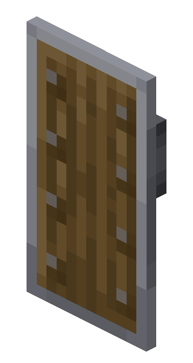, nuevas flechas  y efectos, entre otros cambios en la jugabilidad y la optimización
del rendimiento.
y efectos, entre otros cambios en la jugabilidad y la optimización
del rendimiento.
Minecraft 1.10 Frostburn Update
La Actualización Frostburn (Java Edition 1.10) de Minecraft se lanzó el 8 de junio de 2016, incluyendo
características como variantes de esqueletos /zombis , osos polares  , bloques de estructura y salto automático. El desarrollo comenzó
poco después de la Actualización de Combate 1.9, con pocos snapshots y prelanzamientos.
, bloques de estructura y salto automático. El desarrollo comenzó
poco después de la Actualización de Combate 1.9, con pocos snapshots y prelanzamientos.
Minecraft 1.11 Exploration Update
La "Exploration Update" es una importante mejora de Minecraft Java Edition 1.11 lanzada en
noviembre de 2016. Añadió nuevas características como profesiones de aldeanos , partículas, reglas de juego y
criaturas como vindicadores ,
evocadores , vex y llamas 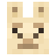. También incluyó bloques nuevos,
ítems como la concha de shulker  y el tótem de inmortalidad
y el tótem de inmortalidad  , y encantamientos de
maldición.
, y encantamientos de
maldición.
Hubo cambios significativos como la eliminación de distinciones entre mayúsculas y minúsculas
en IDs, extensiones en la longitud de mensajes de chat y la posibilidad de usar ciertos ítems como
combustible. Versiones posteriores solucionaron errores y añadieron contenido adicional, demostrado en un
tráiler oficial de Mojang.
Minecraft 1.12 World of Color Update
La "World of Color Update" es una significativa actualización de Minecraft Java Edition 1.12 lanzada el 7 de
junio de 2017. Esta versión se enfocó en añadir una variedad de elementos y características coloridas al
juego. Entre las adiciones destacadas se encuentran nuevos bloques como el concreto  y la terracota vidriada
y la terracota vidriada  , la capacidad de teñir camas y la inclusión de loros de múltiples colores
, la capacidad de teñir camas y la inclusión de loros de múltiples colores
 . También se introdujeron funciones,
comandos adicionales, un narrador que lee en voz alta lo que se escribe en el chat, y la posibilidad de
guardar y cargar la barra de acceso rápido en modo Creativo. Además, se realizaron cambios en la paleta de
colores de varios bloques y se sustituyeron los logros por avances. Versiones posteriores solucionaron
problemas de seguridad y realizaron ajustes adicionales, destacando el cambio de nombre a "Minecraft: Java
Edition". Esta actualización proporcionó una experiencia visualmente más rica y mejoró la funcionalidad
general del juego.
. También se introdujeron funciones,
comandos adicionales, un narrador que lee en voz alta lo que se escribe en el chat, y la posibilidad de
guardar y cargar la barra de acceso rápido en modo Creativo. Además, se realizaron cambios en la paleta de
colores de varios bloques y se sustituyeron los logros por avances. Versiones posteriores solucionaron
problemas de seguridad y realizaron ajustes adicionales, destacando el cambio de nombre a "Minecraft: Java
Edition". Esta actualización proporcionó una experiencia visualmente más rica y mejoró la funcionalidad
general del juego.
Minecraft 1.13 Update Aquatic
La "Update Aquatic" es una importante actualización de Minecraft lanzada en 2018 que se enfocó en
transformar los océanos del juego. Añadió numerosas criaturas acuáticas como delfines 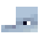, tortugas , peces y fantasmas , junto con nuevos bloques como coral  y hielo azul
y hielo azul  . También introdujo elementos como el
tridente y la membrana de fantasma , así como estructuras generadas
como naufragios y arrecifes de coral.
. También introdujo elementos como el
tridente y la membrana de fantasma , así como estructuras generadas
como naufragios y arrecifes de coral.
Además de las adiciones, la actualización también trajo cambios significativos, como la mejora
en la generación de biomas oceánicos y la introducción de nuevos tipos de biomas. Se agregaron nuevos
comandos y opciones de personalización del mundo, como el modo Buffet y los paquetes de datos, y se
realizaron ajustes en mecánicas de juego como la flotación de objetos en el agua y la reparación del elytra
 con membrana de fantasma.
con membrana de fantasma.
Minecraft 1.14 Village & Pillage
La actualización "Village & Pillage" de Minecraft, lanzada en abril de 2019, se centró en
renovar los pueblos del juego y agregar nuevas amenazas y bloques. Introdujo características como los
campamentos, bambú  , andamios,
nuevas flores y bloques de construcción
como el barril
, andamios,
nuevas flores y bloques de construcción
como el barril  , campana
, campana  y horno de fundición
y horno de fundición  . También incluyó nuevas
criaturas como gatos , pillagers , ravagers
. También incluyó nuevas
criaturas como gatos , pillagers , ravagers  , pandas
, pandas  , zorros 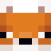 y comerciantes errantes .
, zorros 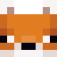 y comerciantes errantes .
Aparte de los nuevos elementos, la actualización también trajo cambios en la mecánica del
juego y correcciones de errores. Se añadieron bloques como la mesa de cartografía  , mesa de forja
, mesa de forja  y cierra
y cierra  . Además, se incluyeron
nuevos patrones de pancartas, armas como la ballesta
. Además, se incluyeron
nuevos patrones de pancartas, armas como la ballesta  y pociones como el guiso sospechoso , junto con mejoras en la generación
de aldeas y la inteligencia artificial de los aldeanos .
y pociones como el guiso sospechoso , junto con mejoras en la generación
de aldeas y la inteligencia artificial de los aldeanos .
Minecraft 1.15 Buzzy Bees
La actualización "Buzzy Bees" de Minecraft se lanzó el 10 de diciembre de 2019 para las
ediciones Java y Bedrock. Esta importante actualización se centró en las abejas 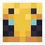 y elementos relacionados, como los panales
 y bloques de miel , así como nuevos ítems como botellas de
miel
y bloques de miel , así como nuevos ítems como botellas de
miel  y panal
y panal  . Las abejas , una nueva adición, pueden polinizar
cultivos, atacar si se las provoca y morir poco después, y tienen una interacción única en el juego. Además,
se realizaron correcciones de errores y mejoras en las ediciones Java y Bedrock con revisiones posteriores,
brindando una experiencia más completa y pulida a los jugadores.
. Las abejas , una nueva adición, pueden polinizar
cultivos, atacar si se las provoca y morir poco después, y tienen una interacción única en el juego. Además,
se realizaron correcciones de errores y mejoras en las ediciones Java y Bedrock con revisiones posteriores,
brindando una experiencia más completa y pulida a los jugadores.
Minecraft 1.16 Nether Update
La actualización "Nether Update" de Minecraft se lanzó el 23 de junio de 2020 para las
ediciones Java y Bedrock, y el 2 de noviembre de 2021 para la Education Edition. Esta actualización
importante se centra en revolucionar el Nether, agregando nuevas características como biomas, bloques y
criaturas. Algunas de las adiciones notables incluyen bloques como el fuego de alma , el hongo carmesí  y retorcido
y retorcido  , y el ladrillo de cuarzo
, y el ladrillo de cuarzo  , junto con nuevos
ítems como el fragmento
y lingote de Netherite 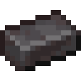,
herramientas y armaduras mejoradas
, junto con nuevos
ítems como el fragmento
y lingote de Netherite 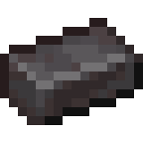,
herramientas y armaduras mejoradas  , y mobs como los piglins
, y mobs como los piglins  , striders , zoglins y hoglins
, striders , zoglins y hoglins  .
.
La actualización "Nether Update" también introdujo nuevas estructuras generadas, como los
restos de bastión, pilares de basalto, hongos gigantes, portales arruinados y fósiles del Nether, además de
cuatro biomas distintos: valles de arena de almas, bosque carmesí, bosque retorcido y deltas de basalto.
Asimismo, se añadieron nuevas melodías al juego a través del álbum "Minecraft: Nether Update (Original Game
Soundtrack)" compuesto por Lena Raine, que complementa la experiencia en este renovado y peligroso mundo del
Nether.
Minecraft 1.17 Caves & Cliffs: Part I
La versión 1.17 de Minecraft trae una amplia gama de características nuevas y mejoras
destacadas. Entre estas se incluyen la introducción de bloques y elementos en las cuevas y acantilados, como
la piedra oscura , cristales de
amatista  , y bloques de
cobre . Además, se agregan nuevos
mobs como las cabras , ajolotes
, y bloques de
cobre . Además, se agregan nuevos
mobs como las cabras , ajolotes  y el calamar brillante
y el calamar brillante  .
.
Otra parte importante de esta actualización son los nuevos bloques como los de musgo y azalea , junto con la inclusión de objetos como los telescopios  y pararrayos . Además, se mejoran
aspectos técnicos como la generación de mundo con cuevas grandes y biomas variados, así como ajustes en la
minería y la adición de recursos como la amatista y el cobre .
y pararrayos . Además, se mejoran
aspectos técnicos como la generación de mundo con cuevas grandes y biomas variados, así como ajustes en la
minería y la adición de recursos como la amatista y el cobre .
Minecraft 1.18 Caves & Cliffs: Part II
La actualización 1.18 de Minecraft Edición Java, también conocida como Caves & Cliffs: Parte
II, fue lanzada el 30 de noviembre de 2021. Esta actualización trajo consigo importantes cambios y adiciones
al juego. Se renovaron por completo las cuevas, se aumentó la altura de las montañas y se añadieron nuevos
biomas. También se introdujo un nuevo disco de música , mejoras en la generación del mundo, opciones de comando y
jugabilidad, así como mejoras en el rendimiento y ajustes en la generación de mundos. En resumen, la
actualización 1.18 trajo una experiencia de juego renovada y emocionante para los jugadores de Minecraft
Edición Java.
Minecraft 1.19 The Wild Update
Se agregaron nuevos biomas fríos y cálidos para la aparición de ranas  en diferentes entornos. Los strongholds
ahora están influenciados por varios biomas, y se ajustaron los biomas en relación con la generación de agua
en mapas. También se añadieron etiquetas para controlar la aparición de patrullas, comerciantes errantes
y asedios zombis en biomas específicos, así como
etiquetas para estructuras, mundos planos y tipos de mundo en la interfaz de usuario.
en diferentes entornos. Los strongholds
ahora están influenciados por varios biomas, y se ajustaron los biomas en relación con la generación de agua
en mapas. También se añadieron etiquetas para controlar la aparición de patrullas, comerciantes errantes
y asedios zombis en biomas específicos, así como
etiquetas para estructuras, mundos planos y tipos de mundo en la interfaz de usuario.
Hubo ajustes en las texturas y comportamientos de varios bloques como el Stand de pociones
 , Vaina de cacao
, Vaina de cacao  y Puerta del End . Se realizaron cambios
en la apariencia y funcionalidad de objetos como Botes, Escudos y Andamios. Además, se modificaron modelos y texturas para
entidades como Aldeanos , Vagabundos
y Animales como Cabras
y Puerta del End . Se realizaron cambios
en la apariencia y funcionalidad de objetos como Botes, Escudos y Andamios. Además, se modificaron modelos y texturas para
entidades como Aldeanos , Vagabundos
y Animales como Cabras  y Llamas . También se hicieron ajustes en
puntos de interés y eventos en el juego.
y Llamas . También se hicieron ajustes en
puntos de interés y eventos en el juego.
Se actualizaron los formatos de archivo para paquetes de datos y paquetes de recursos. Se
ajustaron los avances del juego y la forma en que se desencadenan algunos eventos. Hubo mejoras en la
visualización de HUD, menús y opciones del juego, y se actualizó la biblioteca LWJGL a la versión 3.3.1.
También se realizaron modificaciones en las ubicaciones y condiciones para reproducir música en el juego, y
se hicieron ajustes en partículas, tipos de puntos de interés y predicciones para una experiencia de juego
más coherente.
Minecraft 1.20 Trails & Tales
La actualización 1.20 de Minecraft trae cambios significativos en la generación del mundo,
añadiendo elementos a estructuras como Ancient City y Desert Pyramid . También mejora los efectos visuales de pociones y la Mesa de
Herrería para nuevas actualizaciones de equipo.
La actualización incluye nuevos mobs como Camels , Sniffers y Sentry Armor Trim, además del Elder Guardian que suelta Tide
Armor Trim  . También mejora la estabilidad técnica y la compatibilidad del
juego, añadiendo funciones y eventos para desarrolladores y mejoras visuales en la pantalla de título y
biomas.
. También mejora la estabilidad técnica y la compatibilidad del
juego, añadiendo funciones y eventos para desarrolladores y mejoras visuales en la pantalla de título y
biomas.